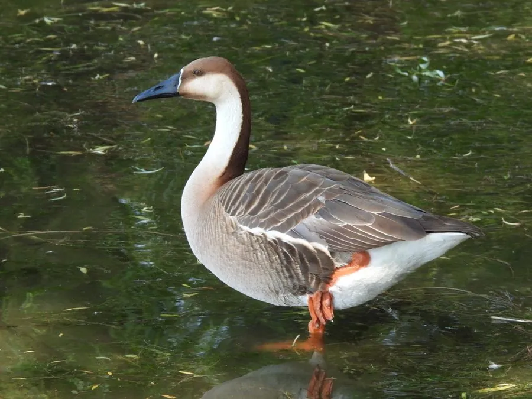

鸟类 · 动物界
鸿雁 Anser cygnoides

中国传统的“大雁”之一，喙黑而长、颈后有一条深色纵纹，是家鹅的主要祖先，迁徙时排成整齐的队形。
- 分类
- 门脊索动物门纲鸟纲目雁形目科鸭科属雁属
- 栖息环境
- 湖泊、沼泽、河滩、草原湿地和农田，迁徙时结群活动
- 地理分布
- 繁殖于蒙古、俄罗斯东南部、中国东北和内蒙古，越冬于长江流域和东南沿海
- 保护级别
- IUCN 易危（VU）；中国国家二级保护动物
物种志
鸿雁体长 81–94 cm，体重约 2.8–3.5 kg，翼展 160–180 cm。它的体羽以灰褐色为主，头顶、颈后和背部颜色较深，颈部有一条明显的深色纵纹，喙长而黑，喙基有一圈白色细环，腿橙红色。雌雄羽色相似，雄鸟体型略大。
鸿雁繁殖于蒙古、俄罗斯东南部、中国东北和内蒙古的湿地，冬季南迁到中国长江流域、东南沿海和朝鲜半岛。它们栖息在湖泊、沼泽、河滩和农田，以水生植物、谷物和草类为食，迁徙时结成大群，排成“一”字或“人”字队形。鸿雁是家鹅的主要祖先之一，人类驯化历史长达数千年。繁殖期在水边草丛中营巢，每窝产卵 5–8 枚，孵化约 28–30 天。由于湿地减少和过度狩猎，野生鸿雁数量下降，被列为易危物种，中国将其列为国家二级保护动物。
形态与习性
- 食性水生植物、谷物和草类
- 体长81–94 cm
- 体重约 2.8–3.5 kg
- 翼展160–180 cm
- 繁殖每窝 5–8 枚卵，孵化约 28–30 天
- 寿命野外约 15–20 年
- 驯化家鹅的主要祖先之一
趣味知识
- 鸿雁是中国传统“大雁”的代表之一，迁徙时排成整齐的“一”字或“人”字。
- 它是家鹅的主要祖先之一，人类驯化历史长达数千年。
- 鸿雁颈部有一条明显的深色纵纹，是识别它的特征。
- 古代诗歌中的“鸿雁传书”说的就是这种候鸟。